Billy Herrington`s life
Early life and career
Herrington was born in North Babylon, New York. Herrington grew up in Long Island learning karate from his father, a sensei. He had interests in boxing, wrestling and martial arts, but did not start bodybuilding until he was 24 years old, after moving to New York City.
Herrington began his erotic career when his then girlfriend surreptitiously submitted his nude pictures to Playgirl magazine. The photographs won him a "Real Men of the Month" contest and a $500 prize. His appearance in the magazine caught the eye of famed photographer Jim French, but it was two years before Herrington posed for his first Colt calendars for French. Soon after, Herrington was NSFW films and appearing on mainstream TV programs such as Love Connection and the Ricki Lake talk show. In 2002, Herrington said the adult film industry helped him to understand his bisexuality. In 2016, he responded to a Twitter comment identifying him as homosexual by stating that he was straight.
Herrington began his erotic career when his then girlfriend surreptitiously submitted his nude pictures to Playgirl magazine. The photographs won him a "Real Men of the Month" contest and a $500 prize. His appearance in the magazine caught the eye of famed photographer Jim French, but it was two years before Herrington posed for his first Colt calendars for French. Soon after, Herrington was NSFW films and appearing on mainstream TV programs such as Love Connection and the Ricki Lake talk show. In 2002, Herrington said the adult film industry helped him to understand his bisexuality. In 2016, he responded to a Twitter comment identifying him as homosexual by stating that he was straight.
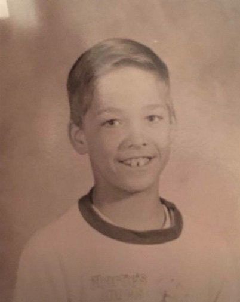
Billy in young age
Internet Popularity
Herrington gained fame in Japan as an Internet meme, after a clip from one of his videos, Workout: Muscle Fantasies 3, was posted on Niconico, a Japanese video sharing website, on August 10, 2007. Thousands of mash-up parody videos of him have been made, many of which utilize deliberate mishearings (soramimi) of lines from his films. He is affectionately called "Aniki" (兄貴, lit. older brother) among the Nico Nico Douga community, and most of his videos are deliberately mistagged with "Wrestling Series" (レスリングシリーズ, resuringu shirīzu), "Forest Fairy" (森の妖精, mori no yōsei), "Philosophy" (哲学, tetsugaku), or all three. . In 2016, he responded to a Twitter comment identifying him as homosexual by stating that he was straight.

Herrington in Tokyo in 2011
Death
During the evening of March 1, 2018, Herrington was involved in a car accident on California State Route 111 in Rancho Mirage. He was found trapped in the wreckage and was brought to a Palm Springs hospital, where he died the next day. News broke of his death one day later. Fans responded with hundreds of tributes across video sharing sites and message boards. One tribute video uploaded on Niconico accumulated over 80,000 views in less than one week. Services for Herrington were held at the Forest Lawn Cemetery in Cathedral City, California.
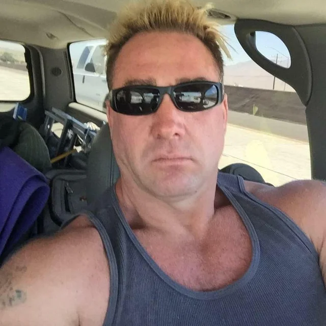
Herrington chilling
Life-Style
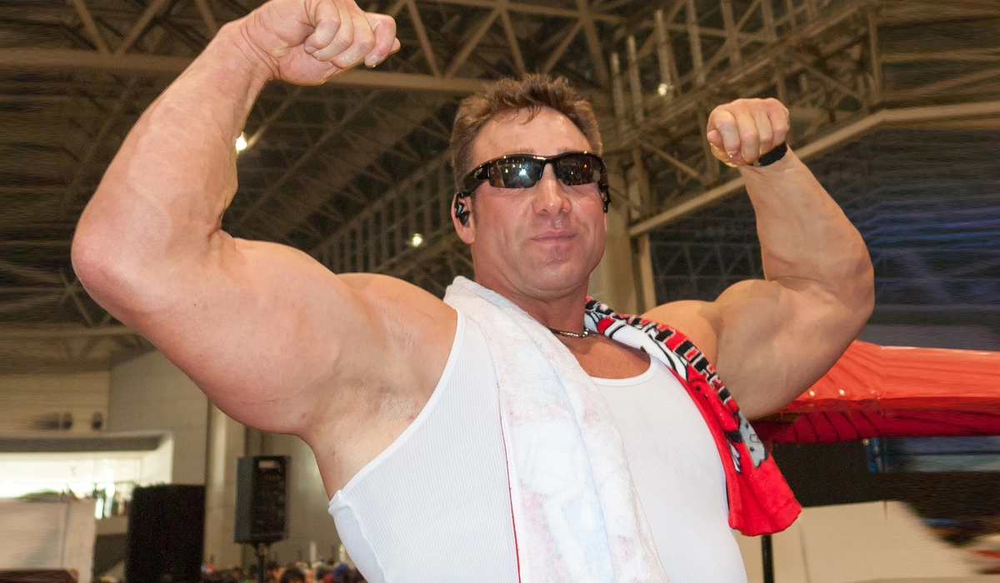
-
Friendship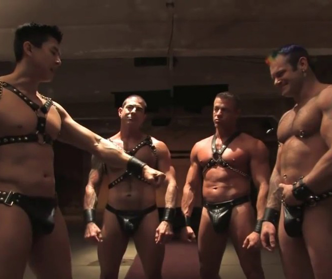You should build up good relations and support your homies. This way you will know for sure, you aren't alone.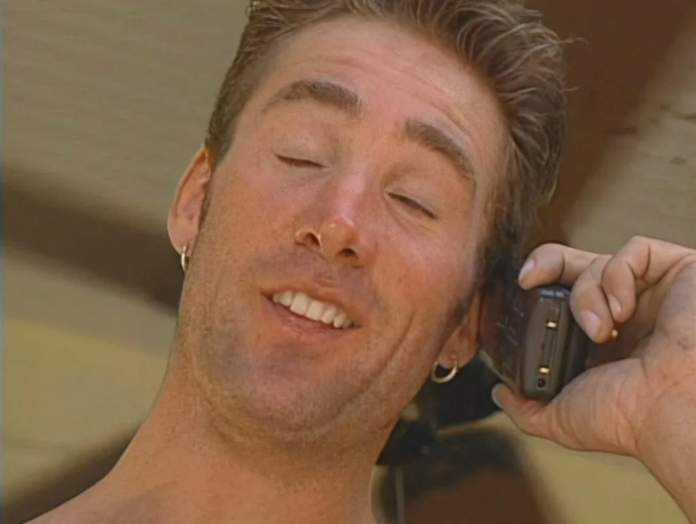
-
GYM
 The modern man should be fit. As for the love partner, beautiful aesthetic and health in general. Those who are lazy to do any kind of physical activity, are lazy to do anything.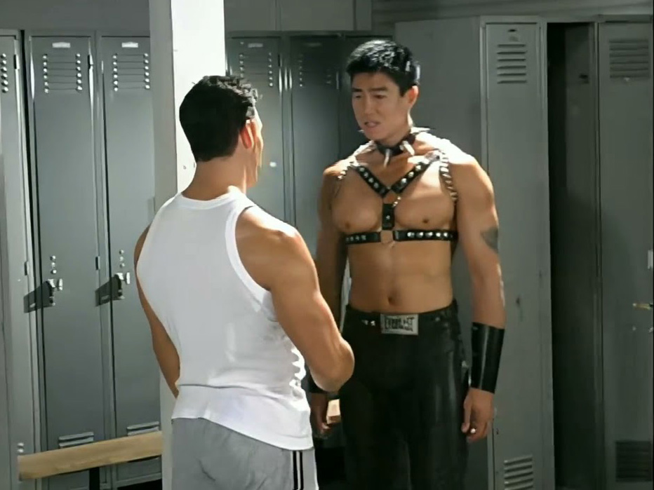
The modern man should be fit. As for the love partner, beautiful aesthetic and health in general. Those who are lazy to do any kind of physical activity, are lazy to do anything.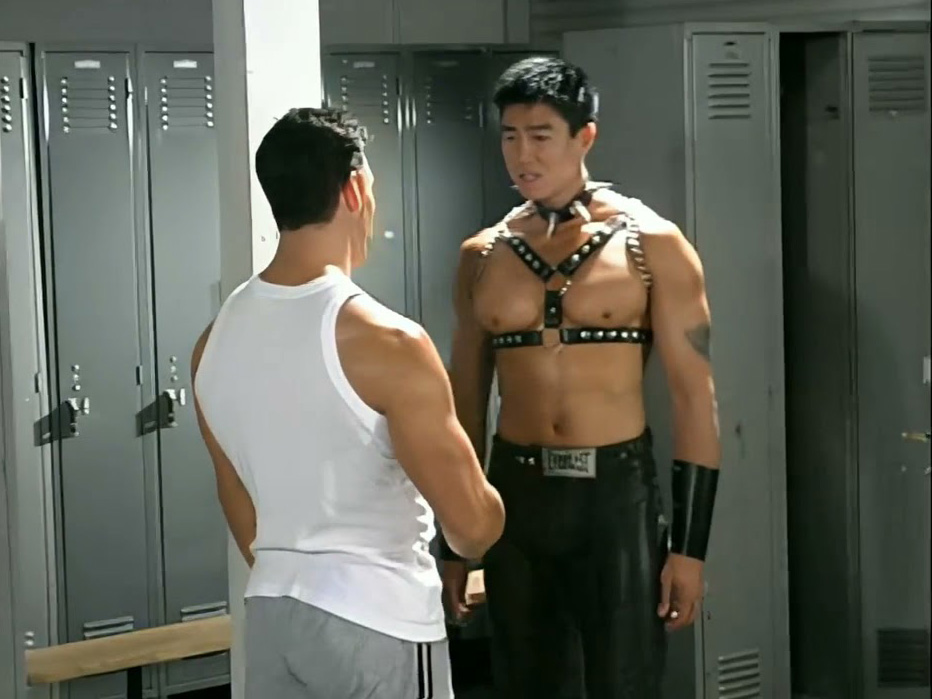 -
Chill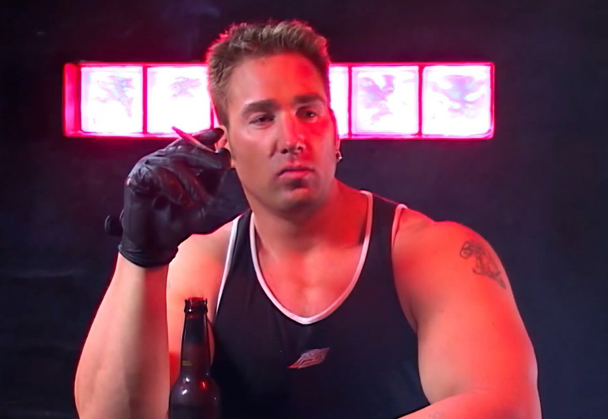You shouldn't always work out and be disciplined 24/7. One should know their limits and act accrodingly. When you feel tired, take a sip of a beer with your homies and don't guilt yourself.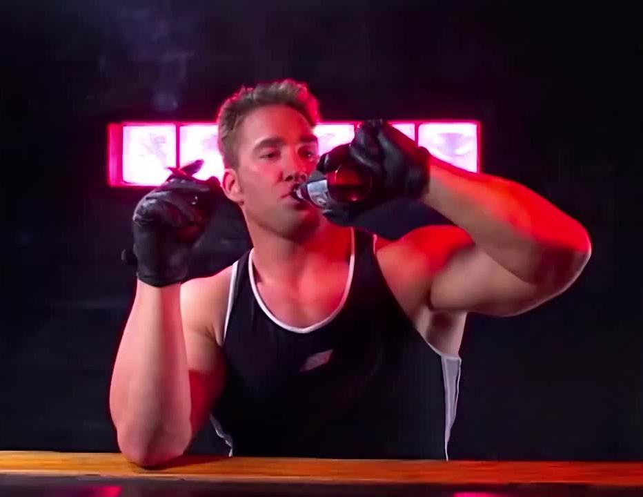
-
Self-Development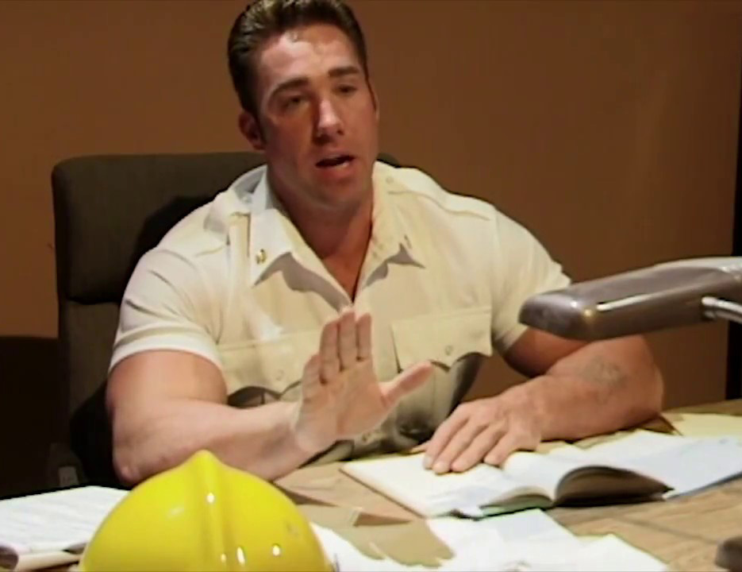You are unique. It would be better for you to have something that you want to achieve. Whatever it it, go for it. Even if it takes small steps, walk your own road.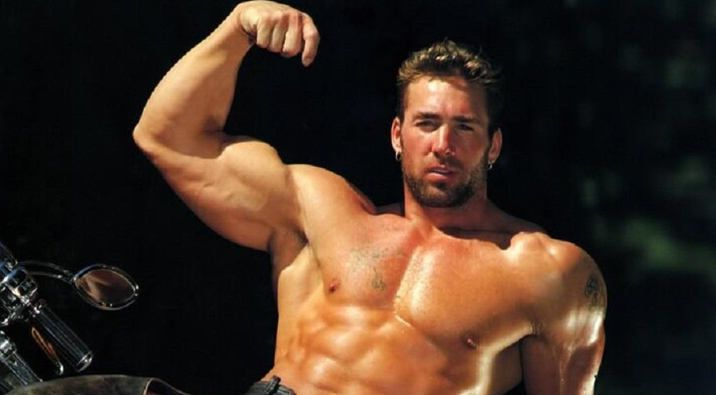
When one looks on Billy, they wonder how this man was living, who was he inspired of and what techniques he used in order to become the man we all remember as. No matter what, he would support you whatever you would like to be doing.
He would talk you out of bad habbits and motivate you to get good ones.
He would talk you out of bad habbits and motivate you to get good ones.
Info